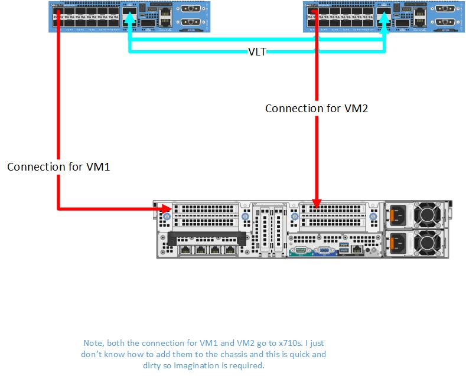
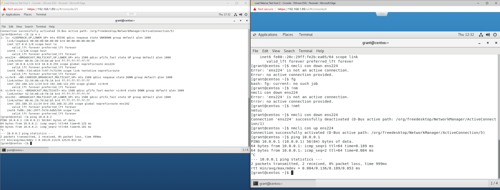
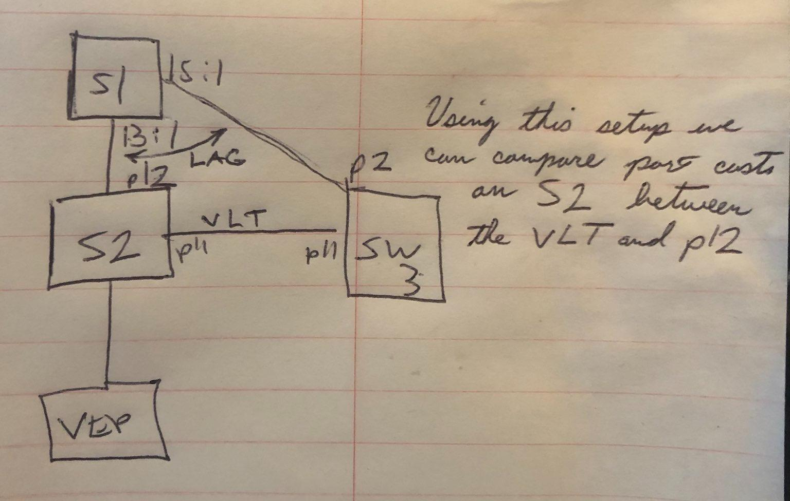
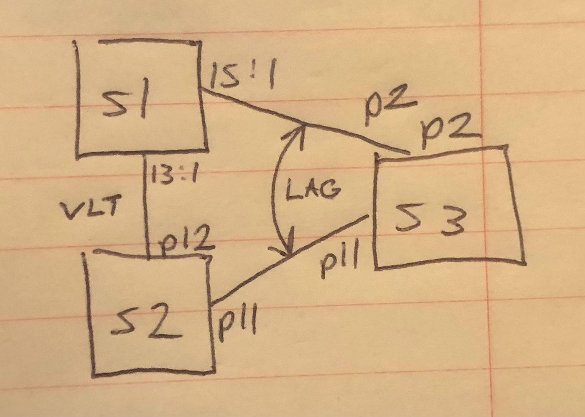

Configuring VLT on OS10
- Configuring VLT on OS10
- My Test Platform
- Configuration of VLT
- Configuration of VLANs for Test
- Test Scenario
- Useful Commands
- Spanning Tree and VLT
My Test Platform
OS10# show version
Dell EMC Networking OS10 Enterprise
Copyright (c) 1999-2020 by Dell Inc. All Rights Reserved.
OS Version: 10.5.1.3
Build Version: 10.5.1.3.190
Build Time: 2020-06-19T21:48:07+0000
System Type: S4112F-ON
Architecture: x86_64
Up Time: 00:19:57

Configuration of VLT
Device 1
# Configure management
configure terminal
interface mgmt 1/1/1
no ip address dhcp
ip address 192.168.1.24/24
exit
# Configure spanning tree
spanning-tree mode rstp
interface range ethernet 1/1/13-1/1/14
# Create a VLT Domain and Configure the VLT interconnect (VLTi)
no switchport
exit
vlt-domain 1
discovery-interface ethernet 1/1/13
discovery-interface ethernet 1/1/14
# Configure the VLT Priority, VLT MAC Address, and VLT Backup Link
primary-priority 4096
vlt-mac 00:11:22:33:44:55
backup destination 192.168.1.25
end
Device 2
# Configure management
configure terminal
interface mgmt 1/1/1
no ip address dhcp
ip address 192.168.1.25/24
exit
# Configure spanning tree
spanning-tree mode rstp
interface range ethernet 1/1/13-1/1/14
# Create a VLT Domain and Configure the VLT interconnect (VLTi)
no switchport
exit
vlt-domain 1
discovery-interface ethernet 1/1/13
discovery-interface ethernet 1/1/14
# Configure the VLT Priority, VLT MAC Address, and VLT Backup Link
primary-priority 8192
vlt-mac 00:11:22:33:44:55
backup destination 192.168.1.24
end
Configuration of VLANs for Test
(On both devices)
configure terminal
interface vlan 9
no shut
exit
interface ethernet 1/1/1
switchport mode trunk
switchport trunk allowed vlan 9
end
On ESXi I used two separate virtual switches each with a port group. Each port group was assigned VLAN 9.
Test Scenario
Objective
Ping from VM1 to VM2 to show that communication will flow over the VLT and vice versa.

Works as expected.
Useful Commands
show vlt 1show vlt 1 mismatchshow running-configuration vlt
Spanning Tree and VLT
I created the below scenario to see what would happen if you created a situation where RSTP can forward from S2 across both port 11 and port 12 to get to interface VLAN 1 on switch 3. In this scenario I gave the VLAN 1 SVI on S2 10.0.0.2 and on S# 10.0.0.3.

The first thing I investigated were the effects on STP on S2.
Under the hood you can drop to the Linux command line and inspect the bridge associated with the VLT setup to see its root path cost (here my VLT interface is bo1000). It is worth noting that VLT interfaces are represented as bonds to the Linux kernel. Furthermore I also noticed the updated values, if updated from the OS10 shell, are not reflected here:
root@OS10:~# brctl showstp br1
br1
bridge id 8000.886fd498b7b1
designated root 8000.886fd498b7b1
root port 0 path cost 0
max age 20.00 bridge max age 20.00
hello time 2.00 bridge hello time 2.00
forward delay 15.00 bridge forward delay 15.00
ageing time 5400.00
hello timer 0.00 tcn timer 0.00
topology change timer 0.00 gc timer 910.24
flags
bo1000 (16)
port id 8010 state forwarding
designated root 8000.886fd498b7b1 path cost 100
designated bridge 8000.886fd498b7b1 message age timer 0.00
designated port 8010 forward delay timer 0.00
designated cost 0 hold timer 0.00
flags
...
e101-012-0 (13)
port id 800d state forwarding
designated root 8000.886fd498b7b1 path cost 100
designated bridge 8000.886fd498b7b1 message age timer 0.00
designated port 800d forward delay timer 0.00
designated cost 0 hold timer 0.00
flags
You can see which interfaces are in the VLT bond with ip a s | grep <the interface use used for vlt>. In my case I only used interface 11 so I did:
root@OS10:~# ip a s | grep e101-011-0
23: e101-011-0: <BROADCAST,MULTICAST,ALLMULTI,SLAVE,UP,LOWER_UP> mtu 9184 qdisc multiq master bo1000 state UP group default qlen 1000
so we can see here that the VLT bond is bo1000. I then performed a ping 10.0.0.3 from S2 and checked the MAC address table.
OS10(conf-if-vl-1)# do show mac address-table
VlanId Mac Address Type Interface
...
1 88:6f:d4:98:a7:b1 static port-channel1000
We can see that the switch learned the MAC address for switch 3 over the VLT interface.
I had a sneaky suspicion that the switch was biasing the VLT link so I reset the experiment except instead of having the VLT between S2 and S3 I put the VLT between S1 and S2. This has the effect of making it so that instead of a single hop across a port channel to get to S3 it would have two hops using the VLT:

I then repeated my VLAN 1 ping test from S2 to S3 and as expected - S2 learned S3's mac address of 88:6f:d4:98:a7:b1 on the VLT port not the port channel:
On S2:
OS10# show mac address-table
VlanId Mac Address Type Interface
...
1 88:6f:d4:98:a7:b1 dynamic port-channel1000
What's going on here is that under the covers it looks like, all things being equal, spanning tree will favor the VLT link. However, if you go into the interface and set the port priority and cost with spanning-tree rstp cost 1 and spanning-tree rstp priority 0, you can force it to use the port channel instead. I repeated my ping test and then checked the mac address table on S2 and as expected got:
OS10(config)# show mac address-table
VlanId Mac Address Type Interface
...
1 88:6f:d4:98:a7:b1 dynamic ethernet1/1/11
Then to confirm my results, on S2, I went back and deprioritized port 11 with:
OS10(config)# interface ethernet 1/1/11
OS10(conf-if-eth1/1/11)# spanning-tree rstp cost 200000000
OS10(conf-if-eth1/1/11)# spanning-tree rstp priority 240
and then redid my ping and as expected got:
OS10(config)# ping 10.0.0.3
PING 10.0.0.3 (10.0.0.3) 56(84) bytes of data.
64 bytes from 10.0.0.3: icmp_seq=1 ttl=64 time=1.16 ms
64 bytes from 10.0.0.3: icmp_seq=2 ttl=64 time=1.04 ms
^C
--- 10.0.0.3 ping statistics ---
2 packets transmitted, 2 received, 0% packet loss, time 1001ms
rtt min/avg/max/mdev = 1.047/1.106/1.166/0.068 ms
OS10(config)# show mac address-table
VlanId Mac Address Type Interface
...
1 88:6f:d4:98:a7:b1 dynamic port-channel1000